Agnost AI: designing a monitoring product for AI agents
Agnost is a Y Combinator-backed startup that monitors AI agents in production, finds silent failures and turns them into tested fixes. agnost.ai ↗
- Timeline
- Jul 2026
- Scope
- Visual Design
- Team
- 1 Designer (me)
- Role
- Freelance design sprint

From sign-in to debugging an agent
Brief
Agnost brought me in for a short 3-day design sprint in July 2026.
What I designed
Most of their product, from flows to interface: sign-in, billing, tool calls, events, empty states and more.
Product
Monitoring and continuous improvement for AI agents, at agnost.ai.
Monitoring and continuous improvement for AI agents
Teams shipping AI agents can’t read every conversation. Agnost watches them in production, detects failures in tool calls and answers, runs experiments and opens a pull request with the fix.
Where the product started, and where it went
Errors
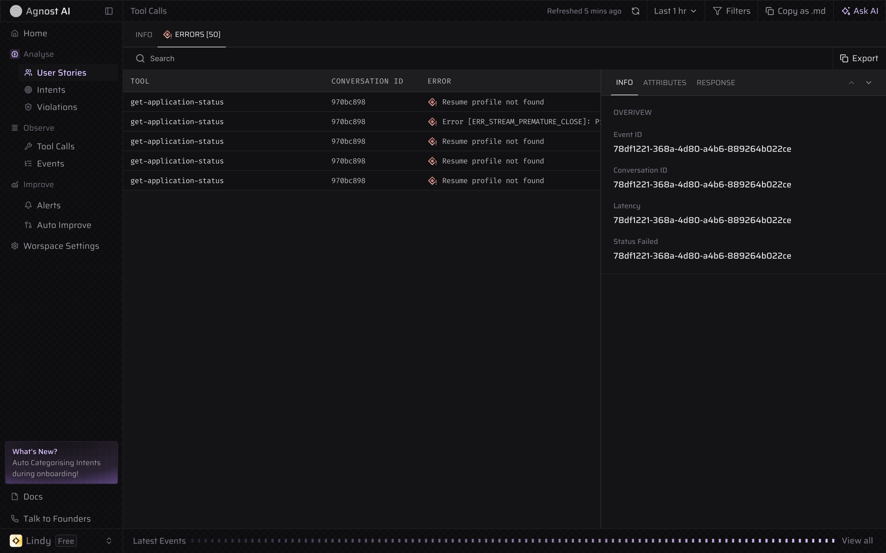
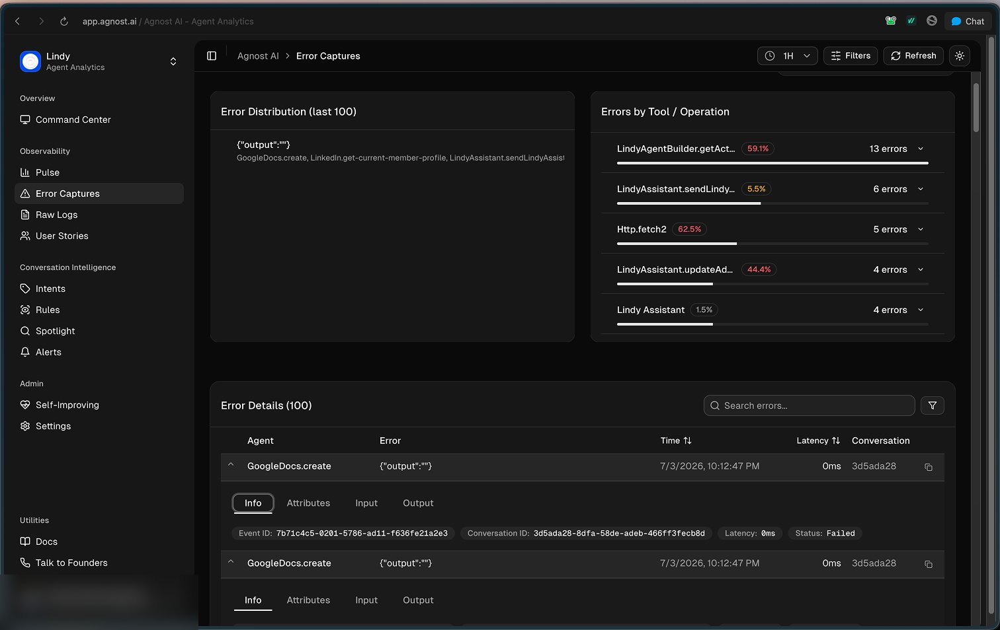
BeforeAfterLogs
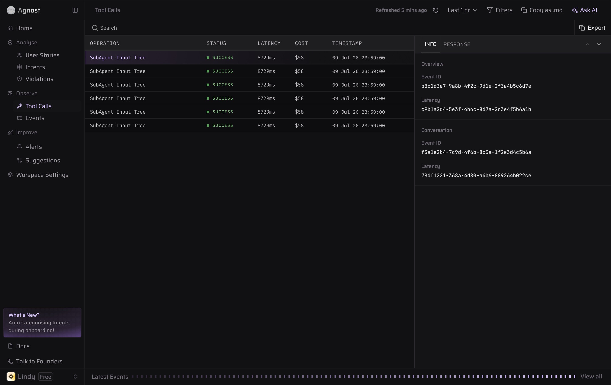
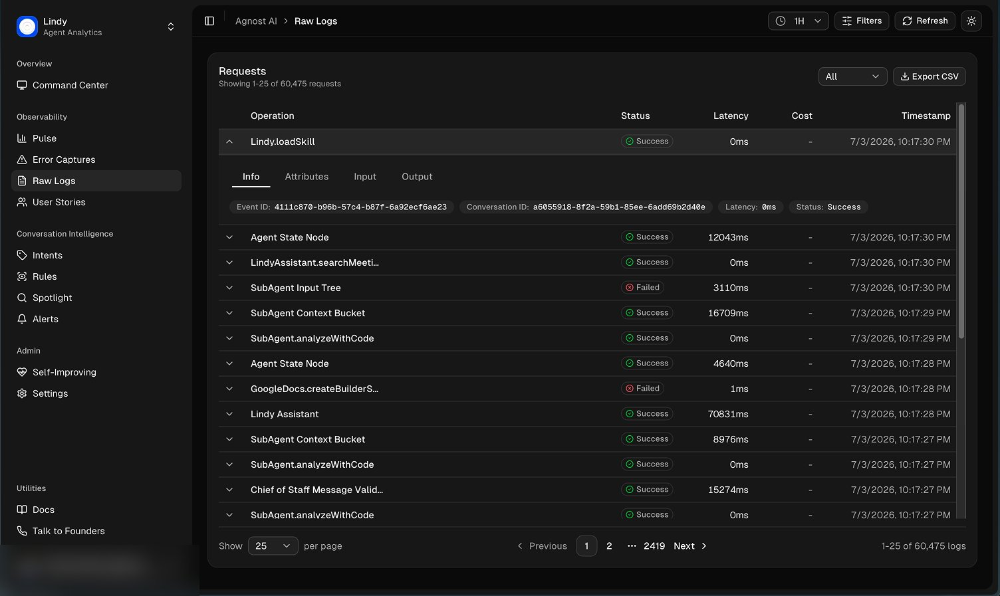
BeforeAfterTool performance
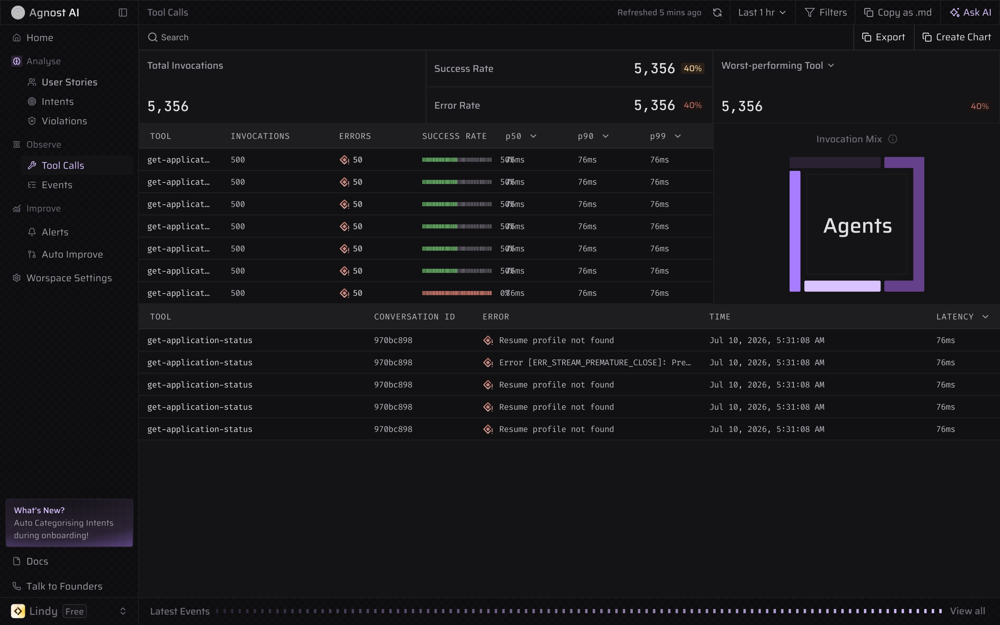
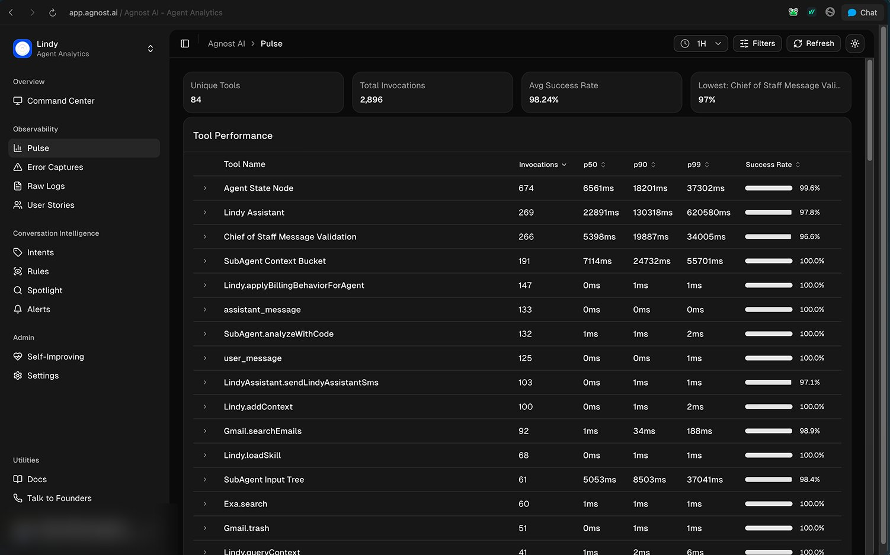
BeforeAfter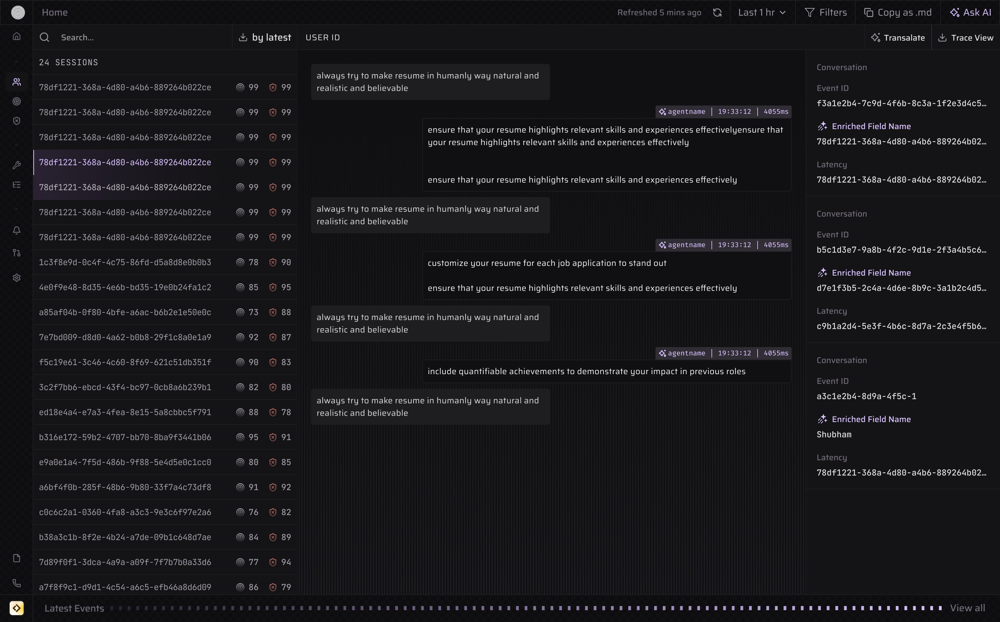
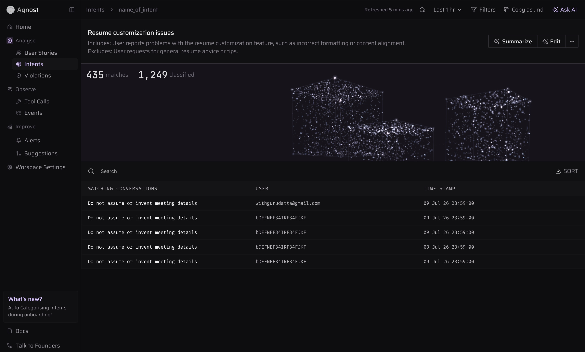
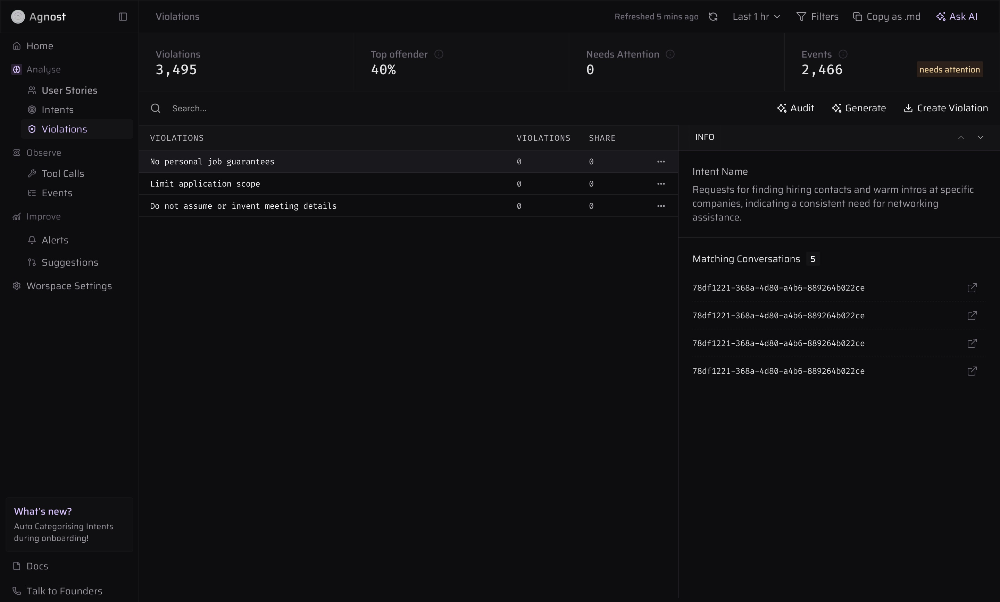
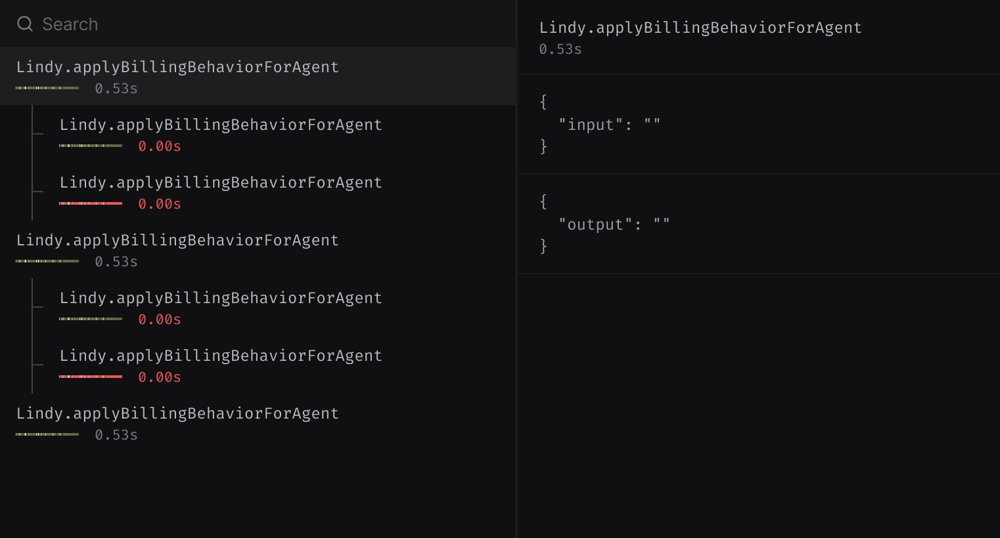

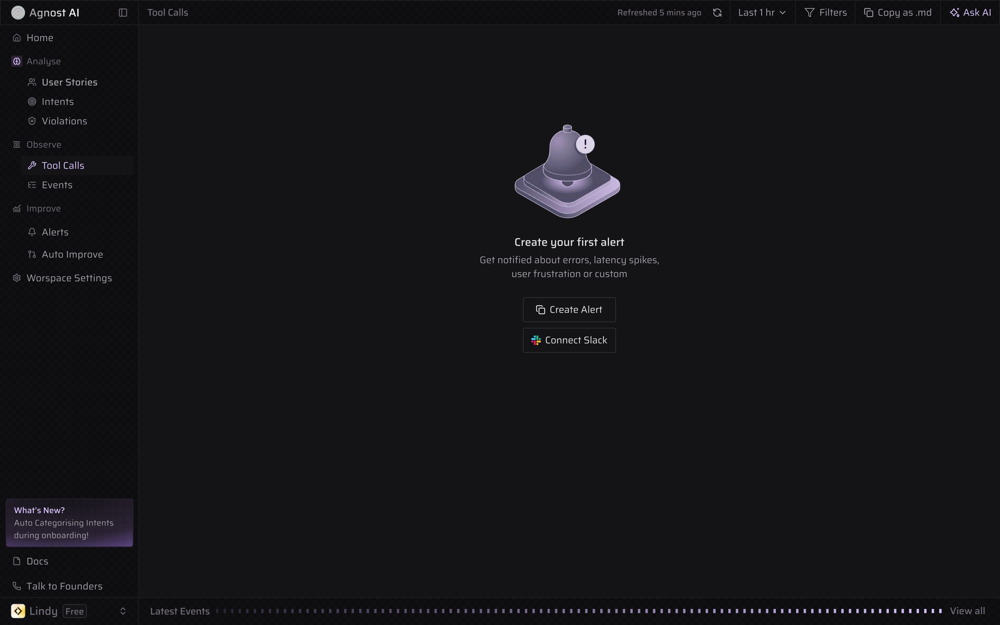